Demo Day: testing the apps together
A guide for running the Demo Day journey: two StudioGens and a DriveGen on one Mac, you doing the steps a real user would do, the runner checking each one. No experience with the tests needed.
- 1. What you need (once)
- 2. Start the run
- 3. The control panel
- 4. Doing a step: tap, talk or type
- 5. The journey, act by act
- 6. Results
- 7. Commands you can say or type
- 8. iPhone simulators by hand
- 9. If something goes wrong
1. What you need (once)
- Xcode from the App Store, opened once (it asks to install components), and its iPhone simulator. In Terminal:
sudo xcodebuild -license accept xcodebuild -runFirstLaunch xcodebuild -downloadPlatform iOS
- Google Chrome (for the control panel; also a stand-in phone if there's no simulator).
- The desktop app's files, once, in the project folder:
cd desktop && npm install && cd ..
- Node.js 22 or newer (
node -v).
2. Start the run
In Terminal, in the project folder:
node tests/tandem/run.mjs
That opens, by itself:
- Studio A and Studio B: two StudioGen windows (Studio A is the Demo-room Mac, the owner; Studio B is the Lobby screen).
- Test iPhone: DriveGen in Safari on an iPhone simulator. One you already have running is used and left running; the runner restarts its Safari and gives DriveGen a fresh address, so it starts as a new phone each run.
- The control panel in your browser, at
http://localhost:8822/tandem/.
Place the windows so you can see the panel, both StudioGens and the iPhone. Starting takes about half a minute.
| To run… | Type |
|---|---|
| The whole Demo Day, you doing the marked steps | node tests/tandem/run.mjs |
| Everything automatically (no clicking; about 6 minutes) | node tests/tandem/run.mjs --auto |
| Only some acts | node tests/tandem/run.mjs --only setup,pair,mesh,show |
| And keep the apps open afterwards to look around | add --hold (Ctrl-C ends) |
| With a phone-sized Chrome window instead of the simulator | add --phone chrome |
| The first, shorter journey | node tests/tandem/run.mjs --journey basic |
3. The control panel
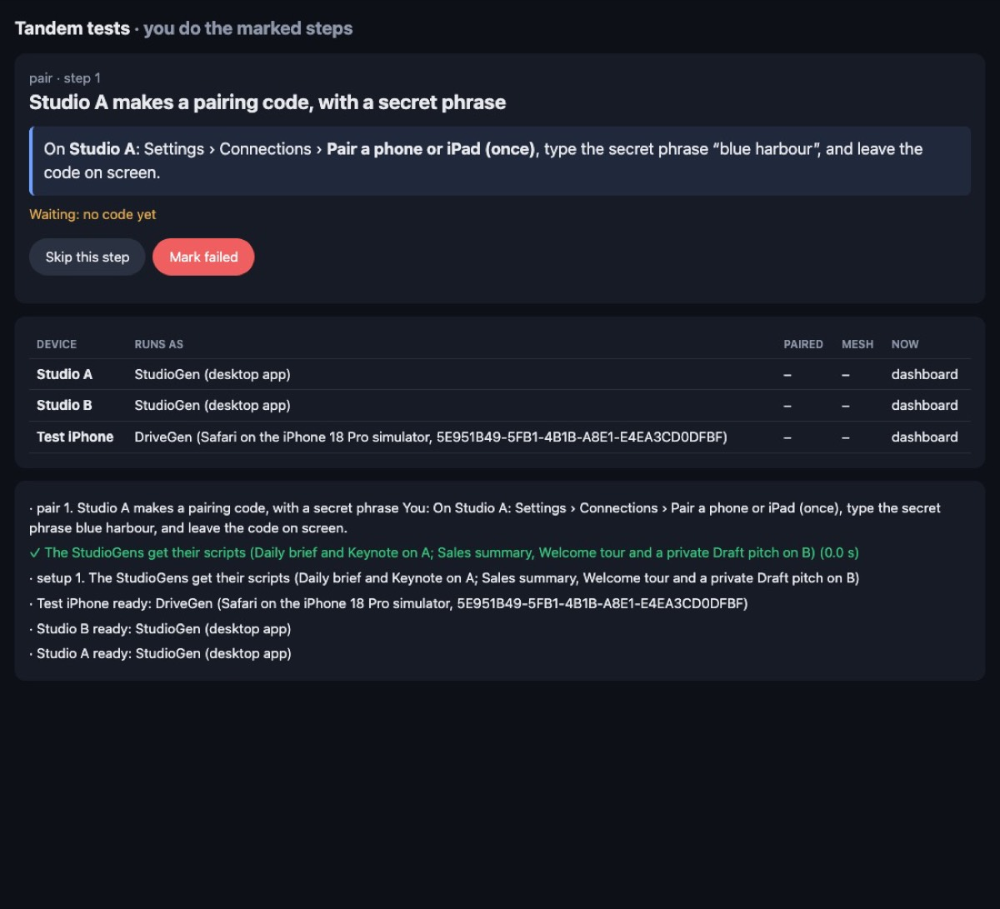
- The panel moves on by itself as soon as it sees the step happen in the apps. There's no “Done” button.
- Skip this step: when something can't be done right now. Mark failed: when you can see it went wrong.
- Steps marked “The runner does this one” or “Nothing to do: watching for it” need nothing from you.
- The device table shows, live: who each one is paired with (green dot = online), the mesh and how many members each sees online, the show step, and whether a direct link is up.
4. Doing a step: tap, talk or type
Most steps can be done three ways; pick whichever you're testing:
- Tap through the screens, as the panel describes (for example Mesh › Devices › Studio B › Remove).
- Talk: tap the mic (or Talk on the Assistant widget) and say the words in purple.
- Type the same words in the Assistant widget's new box and press Send. It goes through exactly the same commands as speech.
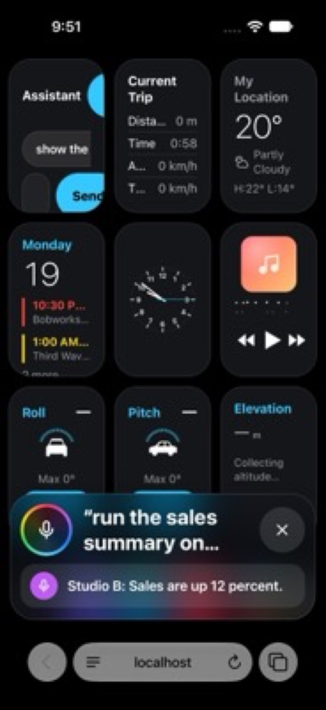
run the sales summary on studio b, typed, and Studio B's answer.
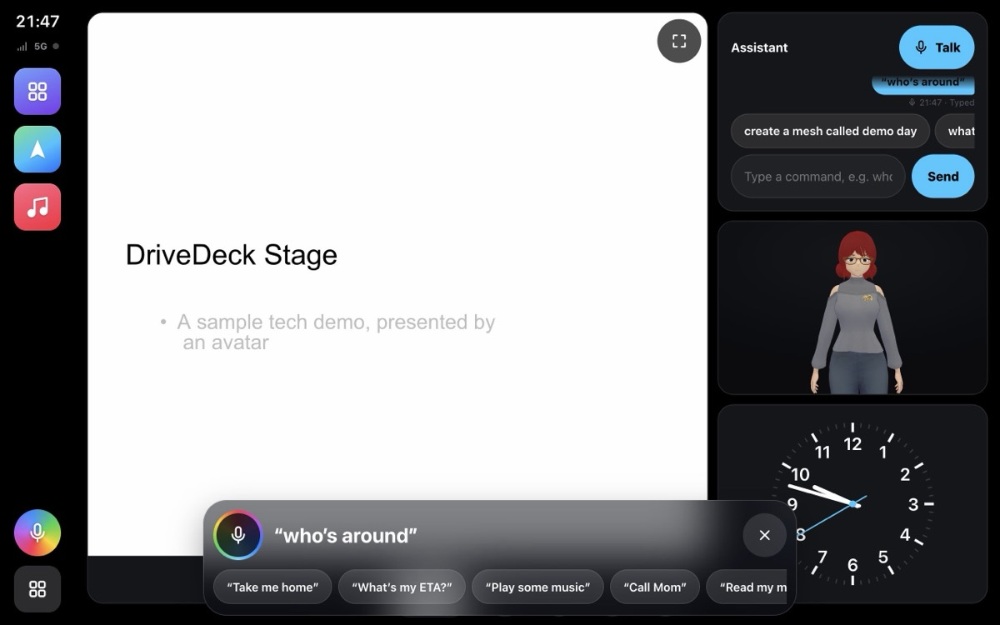
show the assistant widget); what you type and the answer also show in the panel at the bottom. Typing is turned off while the car is moving (when “hide while driving” is on); talking always works.
5. The journey, act by act
You marks what you do; the rest the runner does or just watches. Times are for an automatic run.
Setup (the runner, a few seconds)
Studio A gets the scripts Daily brief (offered to paired phones) and Keynote (three steps: it moves on by itself after the first, waits for a cue after the second). Studio B gets Sales summary (offered), Welcome tour (shared) and Draft pitch (private).
Act 1 · Pair at the desk
- You On Studio A: Settings › Connections › Pair a phone or iPad (once), secret phrase
blue harbour
. Or saypair a phone
. - You On Test iPhone: Settings › Connections › Pair once › No camera? Paste the code. The runner has put the code on the iPhone's clipboard: tap the box, Paste, Use this code, then type the phrase.
- You On Test iPhone:
test the connection
. Checked: at least one relay works. - The direct link comes up by itself (everything is on one Mac).
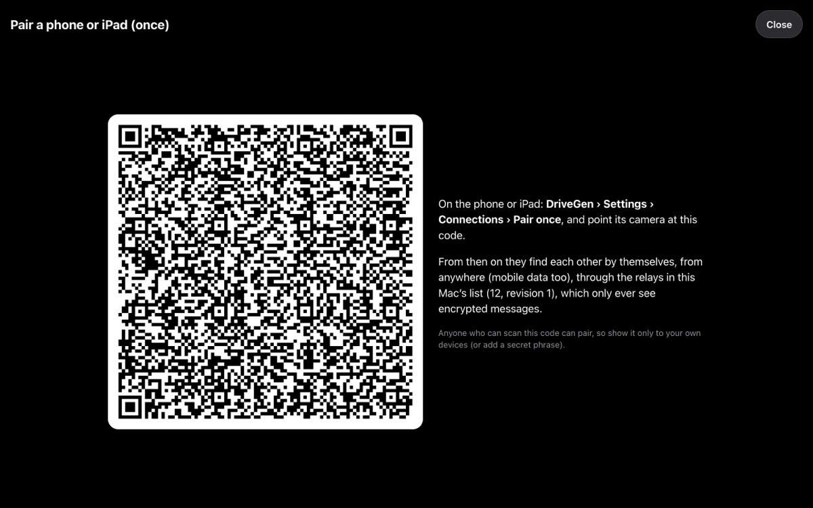
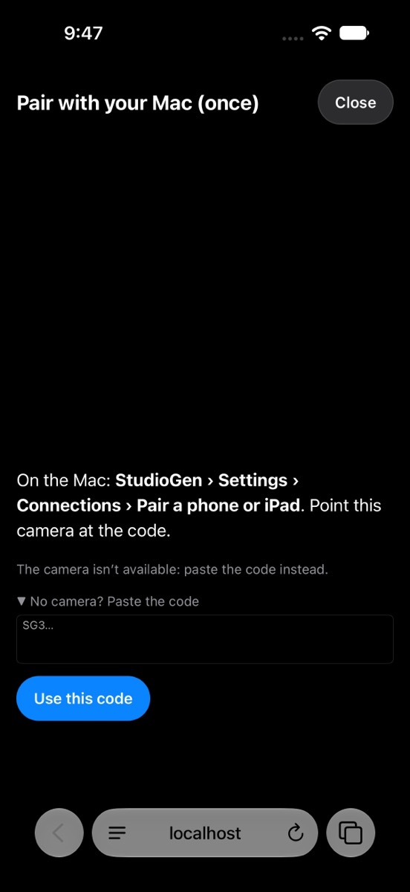
Act 2 · Build the mesh
- You On Studio A: Mesh › Create a mesh, “Demo day”. Or
create a mesh called Demo day
. - The phone joins by itself, because it's paired with Studio A.
- You On Studio A: Mesh › Invite (
invite to the mesh
), copy the text; on Studio B: Mesh › Join with an invite (join the mesh
), paste, Join. - You On Test iPhone:
who's around
. Checked: all three see each other online.
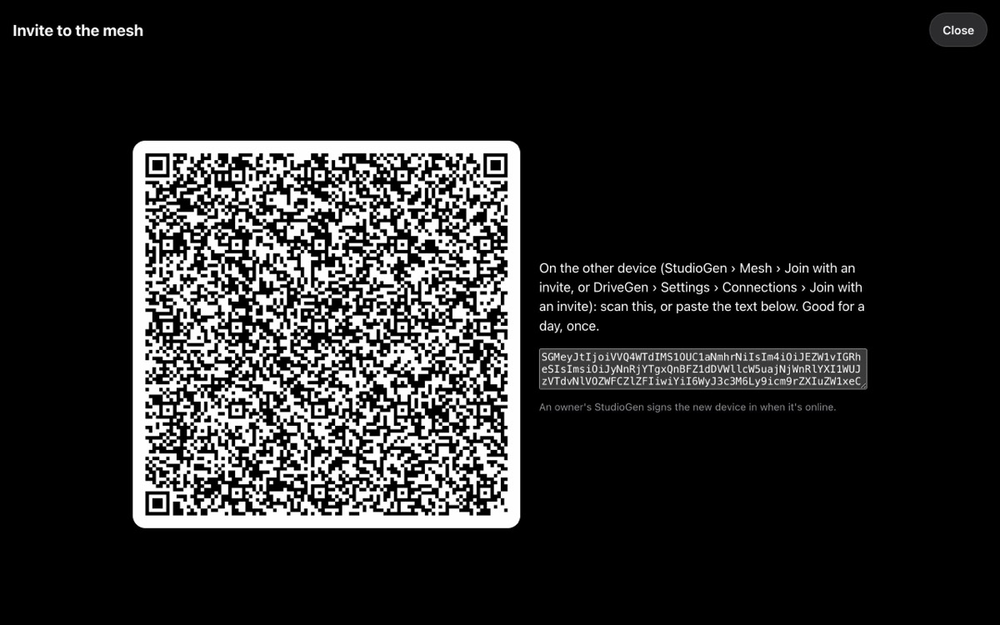
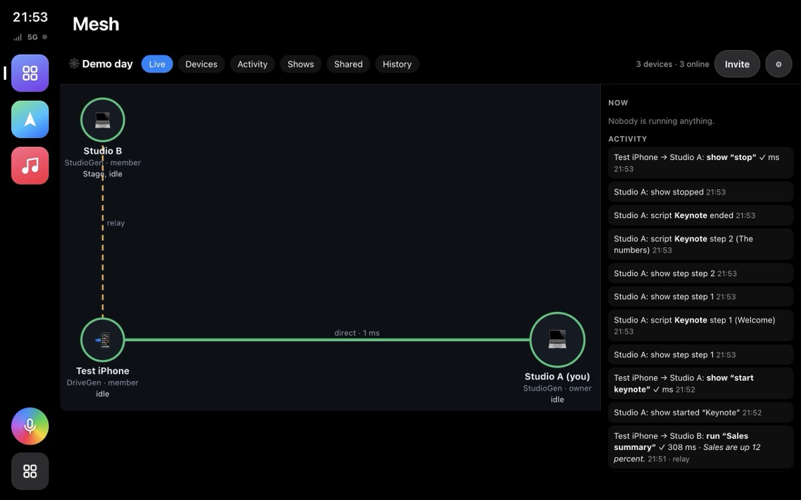
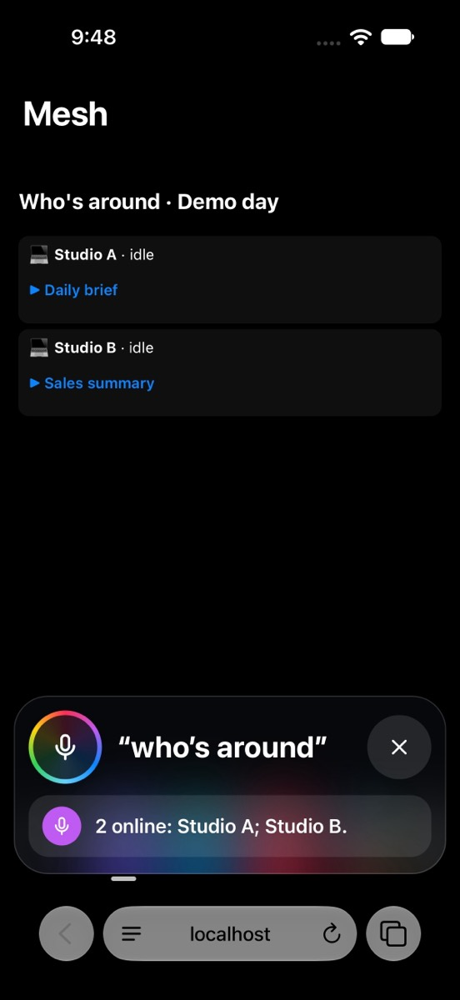
Act 3 · Shared things
- You On Studio A: Mesh › Shared (
what's shared
). Checked: Studio B's Welcome tour is listed, its private Draft pitch is not. - You On Studio A:
get the welcome tour from the mesh
(or Get in the list). Checked: it's now in Studio A's scripts. - You On Studio B:
share the draft pitch with the mesh
. Checked: Studio A now sees it.
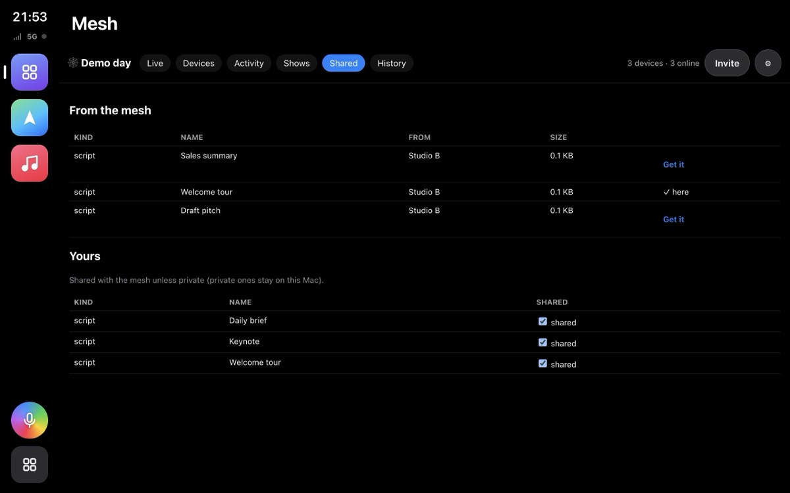
Act 4 · On the road (1:1 with the paired Mac)
- You On Test iPhone:
turn off the direct link
. Everything now goes through the relays, as on mobile data. - You On Test iPhone:
run the daily brief on my mac
. Checked: Studio A's answer (“Three meetings today…”) comes back to the phone. - Checked: Studio A's Mesh › Activity shows the request.
Act 5 · Ask the other Mac
- You On Test iPhone:
run the sales summary on studio b
(or Mesh › Who's around › Studio B › ▶ Sales summary). Checked: “Sales are up 12 percent.” Studio B isn't paired with the phone: this goes through the mesh. - You On Studio A:
don't let test iphone run scripts
(or Mesh › Devices › untick scripts). - You On Test iPhone: the same request again. Checked: refused, with a clear reason.
- You On Studio A:
allow test iphone to run scripts
.
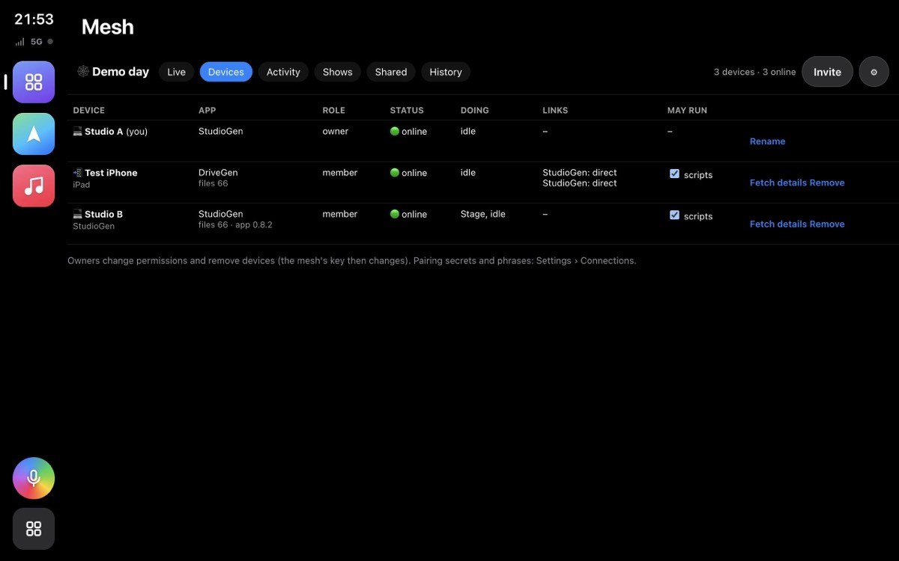
Act 6 · The show, from the phone
- You On Test iPhone:
start the keynote on all screens
. Studio A conducts; Studio B follows. - Studio A moves on by itself after the welcome. Checked: Studio B moves at the same moment (drift under 100 ms; usually a few).
- You On Test iPhone:
next slide everywhere
, thenstop the show
. - You On Test iPhone:
start the keynote in tandem
(each screen runs its own copy), thensend the cue
: Studio B, waiting at step two, moves on. Thenstop the show
.
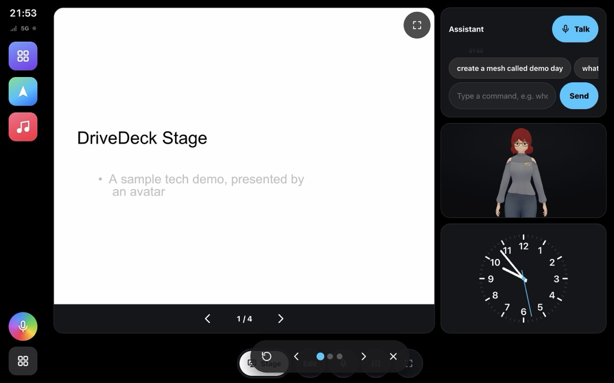
Act 7 · Things go wrong
- The runner puts a dead relay at the top of Studio A's list.
- You On Studio A:
share the relay list with the mesh
(Mesh › ⚙). Checked: Studio B and the phone get the new list. - You On Test iPhone:
run the sales summary on studio b
. Checked: still answered, with the dead relay first. - You Quit Studio B (⌘Q in its window). Checked: Studio A notices it's gone (within 90 seconds).
- The runner opens Studio B again. Checked: it's back in the mesh and online.
Act 8 · Housekeeping
- You On Studio A:
change the secret for test iphone
. Checked: a new key, no break. - You On Studio A:
remove studio b from the mesh
. Checked: two members left; the phone carries on with the new mesh key, Studio B doesn't have it.
Act 9 · Review
- You On Studio A:
show me the mesh
› History (and Activity: search “may not”). Checked: the history holds the run's requests, shows and shared things.export the mesh history
saves it as CSV.
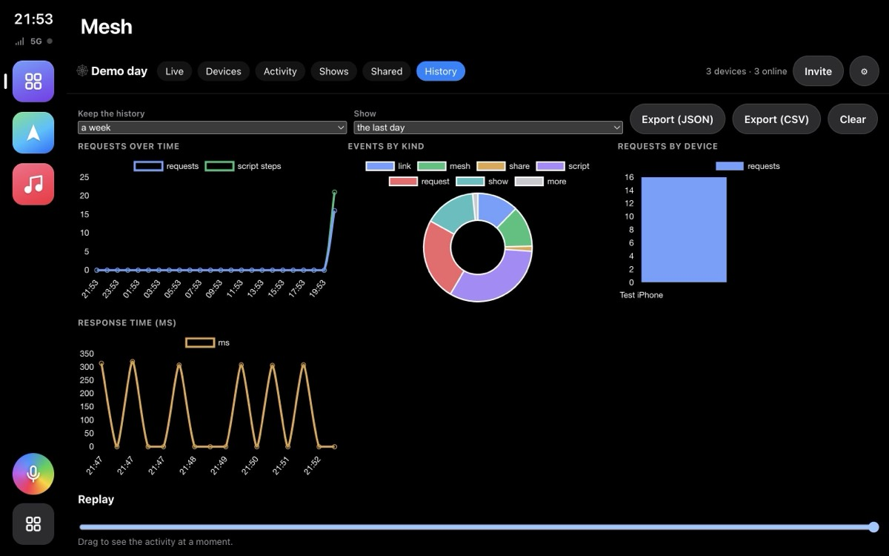
6. Results
At the end the panel shows how many steps passed, failed or were skipped. Everything is saved in tests/tandem/out/<date-time>/:
report.json: every step, passed / failed / skipped, how long it took, and for a failure what the runner was still waiting for.- A screenshot of every device after every step, named
act-step-device.jpg(a = Studio A, b = Studio B, p = Test iPhone).
7. Commands you can say or type
These work in both apps, by voice or in the Assistant's box, in the journey or any time. Settings › Voice commands lists them all (group Mesh and Your Mac) and lets you add your own words.
| What | Say or type, for example | Where |
|---|---|---|
| Who's in the mesh, online, doing what | who's around, show me the mesh | both |
| Create / invite / join / leave | create a mesh called Demo day, invite to the mesh, join the mesh, leave the mesh | create: StudioGen |
| Remove a device (owner) | remove studio b from the mesh | StudioGen |
| Permissions (owner) | don't let test iphone run scripts, allow test iphone to run scripts | StudioGen |
| Run on the paired Mac | run the daily brief on my mac | DriveGen |
| Run on any device in the mesh | run the sales summary on studio b | both |
| Shared things | what's shared, get the welcome tour from the mesh, share the draft with the mesh, make the draft private | share: StudioGen |
| Shows | start the keynote on all screens, start the keynote in tandem, next slide everywhere, previous slide everywhere, send the cue, stop the show | both |
| Relay list (owner) | share the relay list with the mesh | StudioGen |
| History | export the mesh history | StudioGen |
| Pairing and the link | pair a phone/ pair with my mac, test the connection, turn off the direct link, turn on the direct link | both |
| Secrets | change the secret for test iphone, change all the secrets | StudioGen |
8. iPhone simulators by hand
For trying DriveGen on iPhones yourself (the runner doesn't need this; it starts one when needed):
tests/tandem/sims.sh start 2 # two iPhones, shown in DeviceHub, opening DriveGen online tests/tandem/sims.sh start 1 http://localhost:8000/index.html # your local copy instead tests/tandem/sims.sh open https://vchahalibm.github.io/CarPWA/ # a page on every running iPhone tests/tandem/sims.sh paste "SG3…" # put a code on every iPhone's clipboard tests/tandem/sims.sh shot ~/Desktop # screenshots of every iPhone tests/tandem/sims.sh list # which iPhones are installed and running tests/tandem/sims.sh stop # shut them all down
Without the script: open -a DeviceHub (in Xcode 27; earlier Xcodes: open -a Simulator), then xcrun simctl boot "iPhone 18 Pro" and xcrun simctl openurl booted https://vchahalibm.github.io/CarPWA/.
9. If something goes wrong
| What you see | What to do |
|---|---|
| A step waits for ever | Read the yellow “Waiting:” line: it says what the runner hasn't seen yet. Do the step again, or Skip. |
| “Address already in use” at the start | A run is still going (or was killed). pkill -f tests/tandem/run.mjs; pkill -f sg-tandem-, then start again. |
| The iPhone shows an old version of DriveGen | The runner reloads it once by itself. If not: tests/tandem/sims.sh open http://localhost:8822/index.html?tandem=p. |
| No simulator window | Open it yourself: open -a DeviceHub. The test still works without it, but you can't tap the iPhone. |
| The StudioGens speak out loud | They do in tandem runs (so you hear the show); --auto keeps them quiet. |
For developers: the journey's steps are in tests/tandem/journeys.mjs (add acts as features land); the runner is tests/tandem/run.mjs; the commands are MeshCmd in js/mesh.js, wired up in js/commands.js.